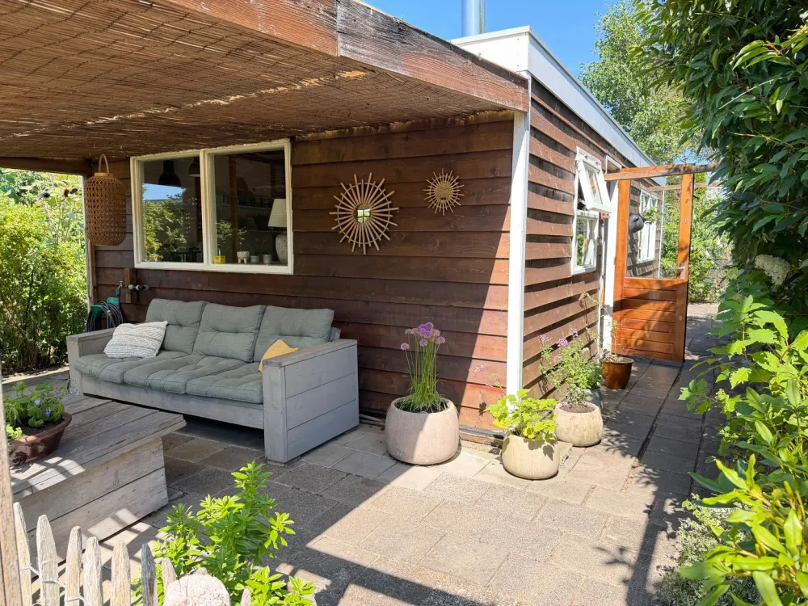
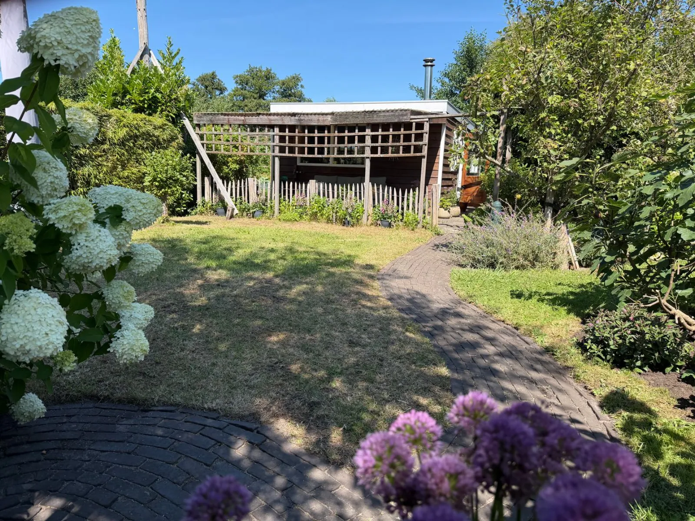
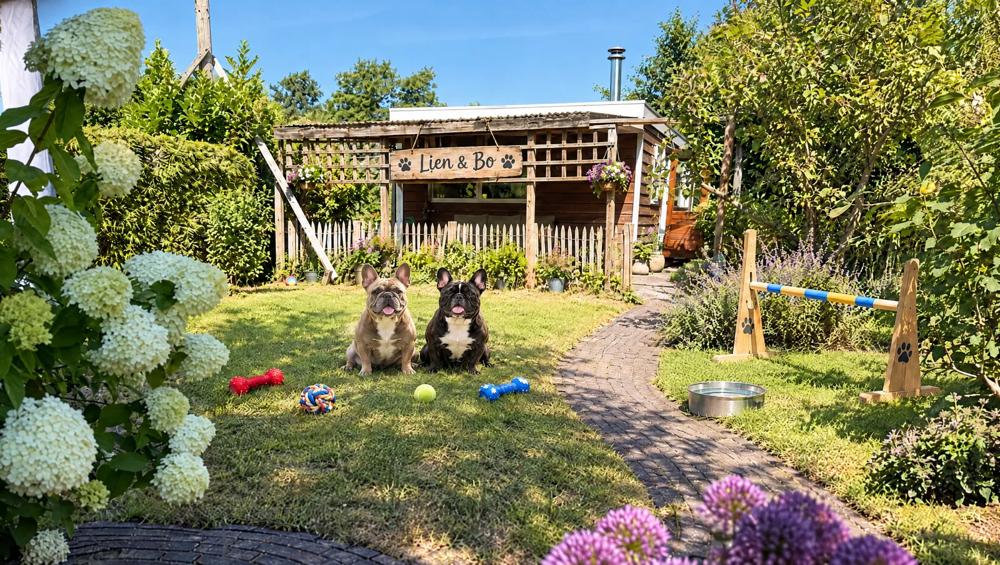
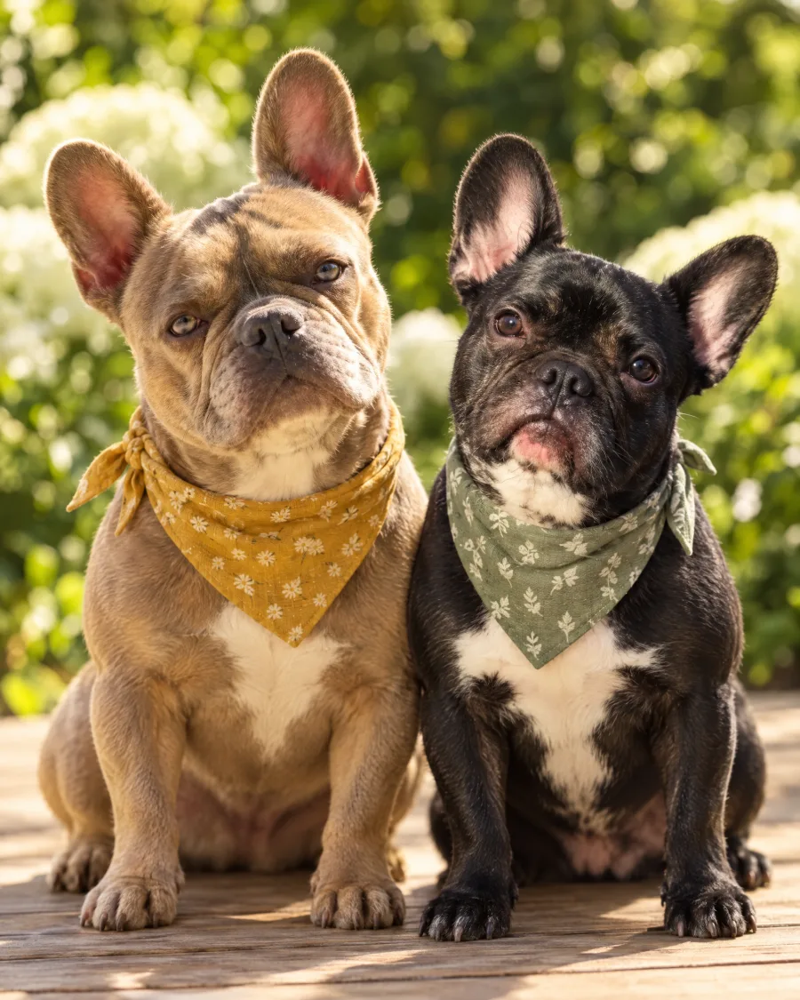
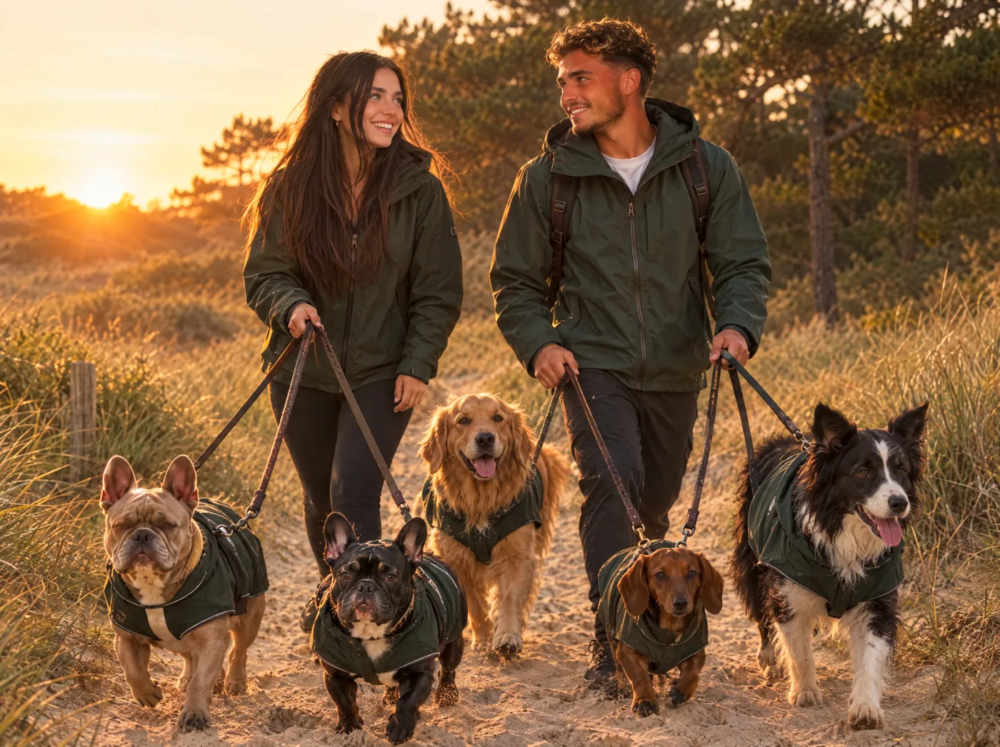
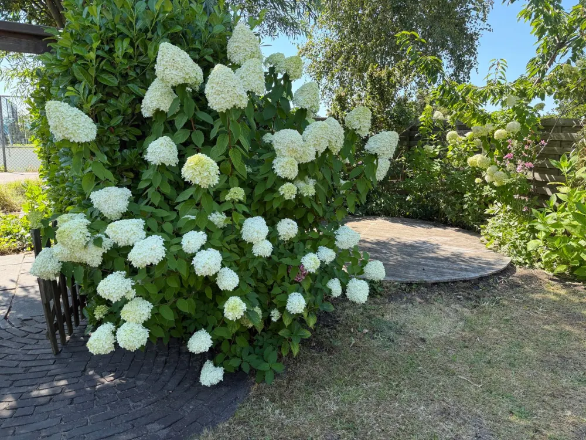

07:30 – 09:00
Brengen of ophalen
Even snuffelen bij het hek, koekje, en hup: de tuin in. Of wij halen je hond thuis op.
Kleine dagopvang in een houten chalet met een tuin van 300 m². Elke dag de duinen in.
Hier zijn Indi en Bes de baas.
Twee Franse bulldogs die elke nieuwe logé persoonlijk komen begroeten. Met kwispel.
Rennen, snuffelen, slapen. Herhalen.
Om 17:30 haal je een moe, blij en schoon hondje op.
Sfeerbeeld met AI, op basis van een foto van de tuin aan de Sportlaan
Ons verhaal
Wij zijn Lien en Bo. We leerden elkaar kennen op de puppycursus van Indi en Bes. De honden waren meteen vrienden. Wij ook.
Na jaren dromen over "ooit een eigen opvang" vonden we dit chalet aan de Sportlaan. Een tuin vol hortensia's, een overkapping voor regendagen en een houtkachel voor de winter. Het bos en de duinen op loopafstand.
Hier krijgt jouw hond wat wij onze eigen honden gunnen: ruimte, rust en heel veel aandacht.
Lien & Bo


Zo vonden we hetZo werd hetSleep het pootje. Links de Funda-foto, rechts de opvang (sfeerbeeld).
Indi en Bes rollen samen door het gras. Lien en Bo raken aan de praat. De rest is geschiedenis.
Allebei de opleiding Dierverzorging en een cursus EHBO voor honden. Het plan wordt serieus.
Op Funda vinden we een houten chalet aan de Sportlaan, tegen Nationaal Park Zuid-Kennemerland. Verkocht.
Hekjes geplaatst, hondenluik erin, de kachel brandt. Indi en Bes staan klaar om je hond te ontmoeten.
Het welkomstcomité
Tik op een kaartje voor hun geheimen.
Indi
Lilac, met een wit borstje. Officieel hoofd ontvangst. Onofficieel hoofd tennisballen.
Draai om

Bes
Zwart, met een wit borstje. Bewaakt de waterbak. Laat iedereen voor.
Draai om
Een dag bij ons

07:30 – 09:00
Even snuffelen bij het hek, koekje, en hup: de tuin in. Of wij halen je hond thuis op.

09:00 – 11:00
Twee uur wandelen in Zuid-Kennemerland. In kleine groepjes, afgestemd op tempo en formaat.
11:00 – 13:00
Ballen, behendigheid en rollen door het gras. 300 m² omheind, op het zuiden.
13:00 – 14:00
Iedereen op een kussen. Gordijnen dicht, rustige muziek. Ja, ook de drukke honden.

14:00 – 16:30
Zoekspelletjes tussen de hortensia's en een snuffelmat. Hersenwerk maakt net zo moe als rennen.
16:30 – 18:30
Je krijgt foto's en een kort verslag via WhatsApp. Hoe at hij? Met wie speelde ze?
Tarieven
Wandeling, snacks, dagverslag en knuffels zitten er standaard bij.
Tot 5 uur, ochtend of middag
€ 22per keer
07:30 – 18:30
€ 34per dag
2 uur, wij halen en brengen
€ 19per wandeling
Wandelen
Vanaf de Sportlaan lopen we zo Nationaal Park Zuid-Kennemerland in. Zand, dennen, konijnensporen. Daar wordt elke hond gelukkig van.
Wat baasjes zeggen
"Onze Joep trekt 's ochtends al aan de riem richting de Sportlaan. Elke dag foto's, top!"
"Eindelijk een kleine opvang. Geen hal met 40 honden, maar een echte tuin en echte aandacht."
"Onze angstige asielhond kreeg een rustige proefdag. Lien nam echt de tijd voor haar."
"De ophaalservice is goud waard. Bo staat om half acht met een glimlach voor de deur."
"Mijn teckel komt moe, schoon en blij thuis. Na de duinen zelfs afgedroogd!"
"Indi en Bes zijn de beste vrienden van onze puppy geworden. Siësta-foto's zijn goud."
Demo: voorbeeldreviews. In de echte site komen hier de Google-reviews.
Kennismaken
Je hond komt een halve dag wennen. Jij krijgt na afloop een eerlijk verslag. Klikt het? Dan plannen we vaste dagen.
Vragen
Je hond hoeft geen feestbeest te zijn. Tijdens de gratis proefdag kijken we rustig hoe hij of zij reageert op Indi, Bes en de groep. Daarna geven we eerlijk advies.
De jaarlijkse cocktail en de kennelhoestvaccinatie. Neem bij de proefdag het vaccinatieboekje mee. Ook een ontworming en vlooienbehandeling vragen we.
Maximaal 8. Zo blijft het rustig en kennen we elke hond door en door. Bij de duinwandelingen lopen we in groepjes van hooguit 4.
Dan spelen we onder de grote overkapping of binnen bij de houtkachel. We wandelen bij elk weer, behalve bij onweer of storm. Je hond komt afgedroogd terug.
Ja, in Santpoort-Zuid en -Noord, Velserbroek, Bloemendaal, Driehuis en Haarlem-Noord. € 4 per rit, met benches in de auto.
Tot 24 uur van tevoren kosteloos. Daarna rekenen we de dag. Ziek? Laat het ons weten, dan kijken we samen naar een oplossing.
Contact
| Maandag | 07:30 – 18:30 |
| Dinsdag | 07:30 – 18:30 |
| Woensdag | 07:30 – 18:30 |
| Donderdag | 07:30 – 18:30 |
| Vrijdag | 07:30 – 18:30 |
| Zaterdag | 09:00 – 12:00 (puppy-ochtend) |
| Zondag | Gesloten |